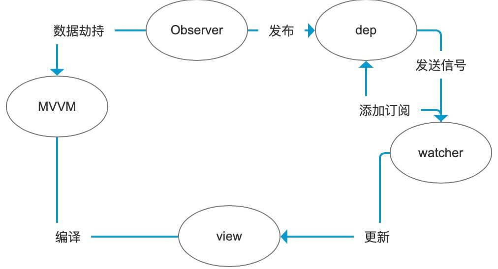
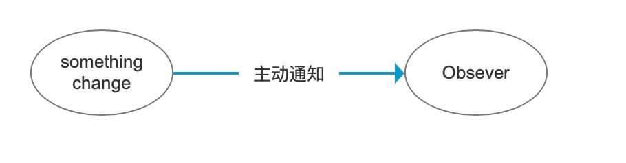

vue 双向绑定原理
Vue 双向绑定，使用数据劫持和发布订阅模式实现的
整个实现过程是怎样的

vue2.0 采用的是Object.defineProperty进行数据劫持的
主要实现原理是使用描述对象中的set方法进行拦截，并发送订阅器信号
// ...
let dep = new Dep()
return Object.defineProperty(obj, prop, {
// ...
get: function(key) {
dep.target = this
dep.addSub()
// ...
}
set: function(newVal) {
val = newVue;
// 发送一个dep信号
dep.notify()
// ...
}
})
而vue3.0中将会采用Proxy来实现数据劫持
let target = {}
let p = new Proxy(target, {
set: function() {
//...
},
get: function() {
//...
}
})
为啥呢？
我们知道 Object.defineProperty 是有局限性的，他的拦截的 target 就是单纯的对象的key的值。所以呢，对象属性的删减，数组，数组长度的改变，它就没法进行劫持了。而 ES6 的新特性Proxy，它可以拦截对象，数组几乎一切对象包装类型。但是 Proxy 没法兼容 IE，所以 Vue3.0 底层还是采用 Object.defineProperty。而使用 Proxy 作为一个 api ，也就是说：
我们不兼容IE，就大胆用 Proxy 双向绑定而且不会有属性删减和数组劫持不到的问题
我们要兼容IE，就用原来的双向绑定，但是要注意它的不能劫持部分变化的缺陷
从上图我们可以看到，Observer 观察了 object 值的变化，这是一种观察者模式。而 Observer 将观察的信号发布给订阅器这是一种 发布订阅模式
那么观察者模式与发布订阅模式有什么区别呢？
我们先谈观察者模式
什么是观察者模式，首先有一个观察者，一个被观察者，被观察者这里是数据，而观察者是Observer，被观察者发生变化时，主动发生信号给被观察者

按照这个思路来说，我们也能想象尤大，当时设计双向绑定时候，思考怎样去监听这个数据的变化，也就是如何使用观察者模式来实现，而恰好对一个对象的处理中有个对象方法我们可以使用，就是 Object.defineProperty
假如没有这个方法我们怎么实现呢？
这就是 angular 的另外一种实现方式脏检测，也就是不停的轮询数据的变化情况，显然脏检测对性能消耗比较大
再谈谈发布订阅模式
在软件架构中，发布订阅是一种消息范式，消息的发送者（称为发布者）不会将消息直接发送给特定的接收者（称为订阅者）。而是将发布的消息分为不同的类别，无需了解哪些订阅者（如果有的话）可能存在。同样的，订阅者可以表达对一个或多个类别的兴趣，只接收感兴趣的消息，无需了解哪些发布者（如果有的话）存在。
这里很明显了，区别就在于，不同于观察者和被观察者，发布者和订阅者是互相不知道对方的存在的，发布者只需要把消息发送到订阅器里面，订阅者只管接受自己需要订阅的内容
由此发布订阅模式是一种松耦合的关系，watcher 和 Observer 之间是互相不受影响